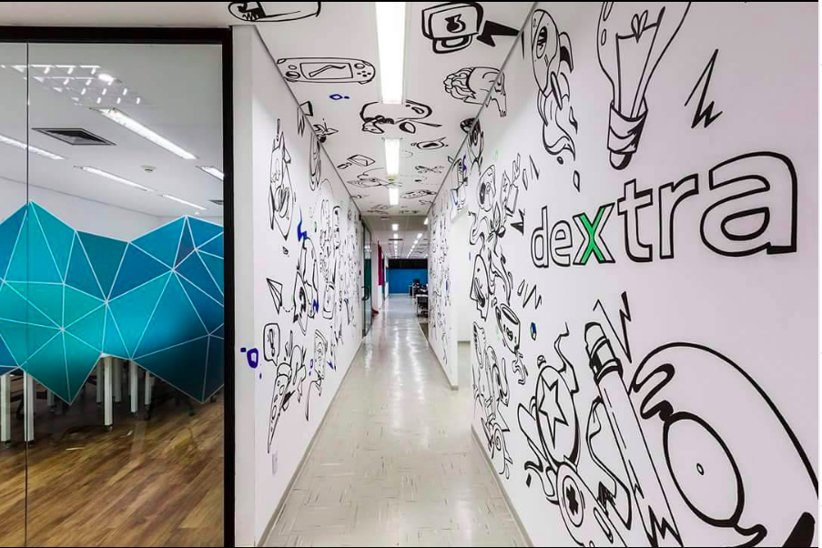

<ion-header>
  
</ion-header>

<ion-content>
  
  <div style="text-align: center; position: relative; padding-top: 25%;">Bora achar futuros dextranos?  clique em buscar!</div>
  <ion-button style="align-self: center;" href="/profiles">Buscar!!</ion-button>
  </ion-content>
